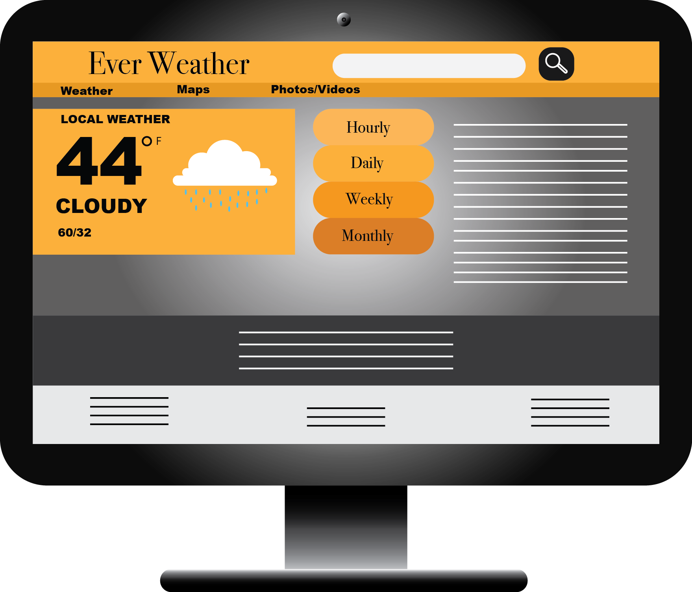
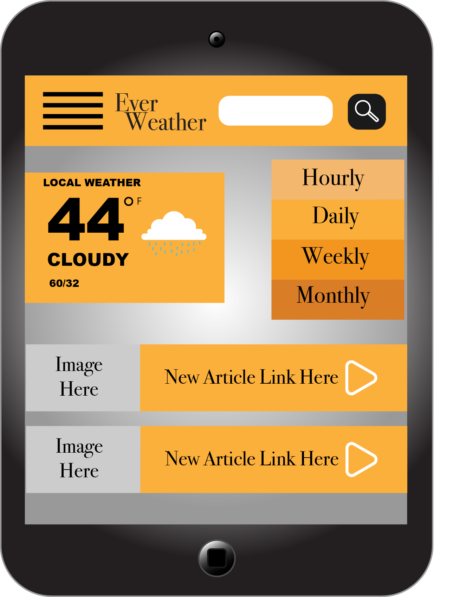
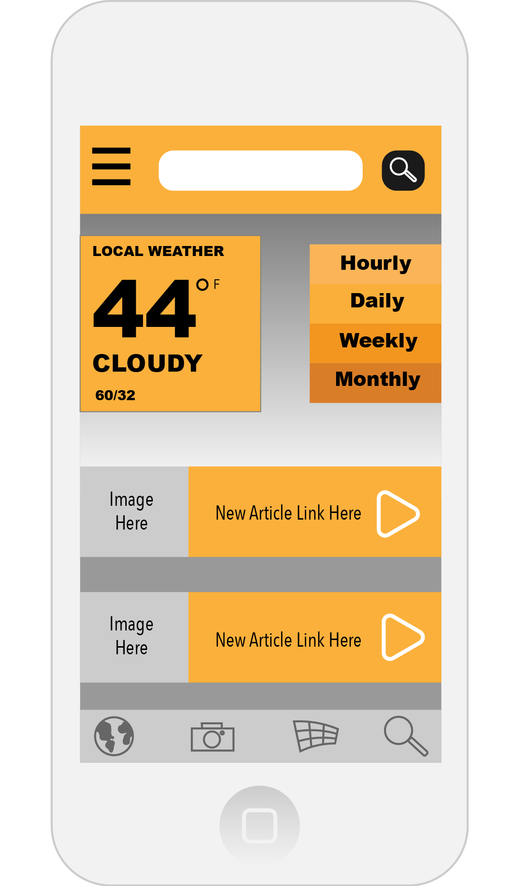

The purpose of this site is to inform members of the community about the weather report from hourly to monthly. The site will give users the opportunity to view map and select an area for weather report. Users can also view photos and videos of weather forecast in their area.
Target Audience
The target audience for this weather site is anyone who is looking to find out about the weather. The audience also involves teens and adults from 14 to 40 on smart phones accessing the mobile weather app. The desktop view of the weather site includes older adults from 40 to 60+.
Persona
John Smith is a 30-year-old husband and father of 3 children. His occupation is accounting at a moderately sized law firm in Arizona. As an accountant he works about 40 hours or less a week. With his free time, he enjoys adventures with his family. In Arizona the weather can often be unpredictable and flash floods are very dangerous, so he checks the weather on his IPhone 6 anytime he and his family leave town to go hiking or biking.
Quote: "Family is always first work comes second."



Reviewer:
Asher Harris
Feedback:
The design directs the eye straight to the weather report on the left side of the screen. Increase text size and bold “hourly.” Eliminate the Monthly and daily tabs from the design. Needs small icon menu at the button because people looking at weather want quick easy results on-the-go. In the button menu, create world icon for the global weather. Add more shades of orange into the color scheme. On the desktop design take away the menu icon at the top and add drop down menu.
Changes:
The feedback was very useful in helping me understand others perspectives on the design. I went in and changed the hourly-monthly bar and changed the color scheme to include more shades of orange to draw the user’s eye around the screen more. On the iPhone I added a menu bar at the button so users can access more easily the information. On the desktop design I added a menu bar just below the title and search bar to go users more options when viewing the webpage.